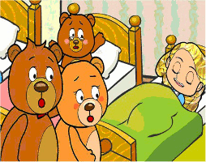

Hace mucho tiempo, existió una niña hermosa de cabellos largos y tan rubios, que todos le llamaban Ricitos de Oro. Como era costumbre cada mañana, Ricitos de Oro se levantaban temprano para recoger flores en el bosque, pero un buen día, la niña caminó tanto entre los árboles que se perdió. Cansada y triste, Ricitos de Oro llegó a una cabaña pequeña que se alzaba a los pies de un arroyo, y al descubrir que la puerta de aquella cabaña se encontraba abierta, decidió entrar.Una mesa grande ocupaba el centro de la sala, y encima de ella la niña pudo ver tres tazones de sopa, uno grande, otro mediano y el último, el más pequeño de los tres. Al ver aquella sabrosa comida, Ricitos de Oro se dispuso a beberla, comenzando por el tazón más grande de todos.
“¡Qué caliente!” – exclamó con sorpresa la niña, y decidió probar del tazón mediano. “¡Este también está caliente!” – dijo con pesar y se dispuso finalmente a saborear la sopa del último tazón, el más pequeñito de los tres. “¡Este sí que está delicioso!” – repitió una y otra vez con cada bocado hasta que no dejó una sola gota de la sopa.Cuando terminó de comer, Ricitos de Oro sintió ganas de descansar y descubrió tres sillas en la esquina de la sala, una grande, otra mediana y la última, la más pequeñita de las tres.Al probar la silla grande, descubrió que sus pies no tocaban el suelo, por lo que decidió sentarse en la silla mediana, pero esta era muy ancha para ella. Por último, se dejó caer en la silla más pequeñita de todas, pero lo hizo con tanta fuerza que la rompió.
Dentro de la casita pequeña, también había un cuarto con tres camas. Una grande y ancha, otra mediana y alta, y una tercera bien pequeñita. Entonces, Ricitos de Oro quiso probar la cama más grande y ancha, pero era tan dura que desistió al momento. Seguidamente, saltó hacia la cama mediana y alta, pero esta también era muy dura para la niña, así que no tuvo más remedio que irse a dormir a la cama más pequeñita de todas. Como la camita era tan suave, la niña se quedó dormida en poco tiempo.Al cabo de las horas, llegaron tres osos pardos. Eran los verdaderos dueños de la casita: Papá Oso, grande y fuerte, Mamá Osa, mediana y hermosa, y finalmente, Bebé Oso, pequeñito y saltarín.
Cuando se acercaron a la mesa para desayunar, Papa Oso exclamó sorprendido: “¡Alguien ha probado mi sopa!”, a lo que Mamá Osa también replicó: “¡Alguien también ha probado mi sopa!”, y finalmente, el Bebé Oso terminó por decir entre sollozos: “¡Alguien se ha tomado toda mi sopa!”.Triste y desconsolada, la familia de osos se dispuso a sentarse en las sillas de la casita, pero al llegar, Papa Oso gritó furioso: “¡Alguien se ha sentado en mi silla!”, y Mamá Osa tampoco demoró en protestar: “¡Alguien también se ha sentado en mi silla!”. Sin embargo, la mayor sorpresa fue para Bebé Oso, quien no pudo contener las lágrimas cuando exclamó: “¡Alguien ha roto mi silla!”.
Los tres osos no sabían ya qué hacer, estaban tan tristes y afligidos que decidieron acostarse un rato en sus camas para descansar y olvidar lo ocurrido. Entonces, Papá Oso tumbó su enorme cuerpo en la cama grande y ancha, pero al instante exclamó: “¡Alguien se ha acostado en mi cama!”.Mamá Osa, al acostarse en su cama alta y ancha se apresuró a decir: “¡Alguien también se ha acostado en mi cama!”, pero la mayor sorpresa fue para Bebé Oso, quién al llegar a su camita, pequeña y suave, chilló con todas sus fuerzas: “¡Alguien está durmiendo en mi cama!”.Ante tanta algarabía, Ricitos de Oro se despertó asustada, y al ver a los tres osos mirándola se asustó tanto que salió a toda velocidad por la ventana del cuarto, y tanto corrió la pequeña niña que en pocos minutos atravesó el bosque y pudo por fin encontrar el camino de regreso a casa.
